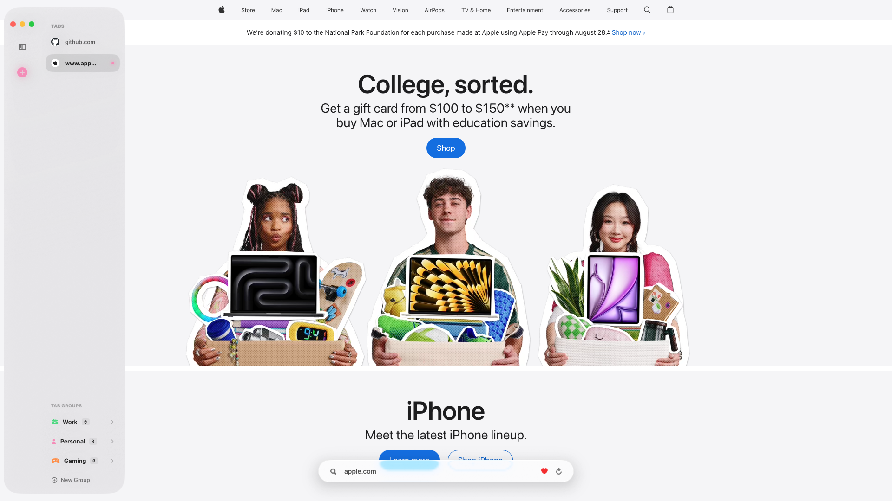
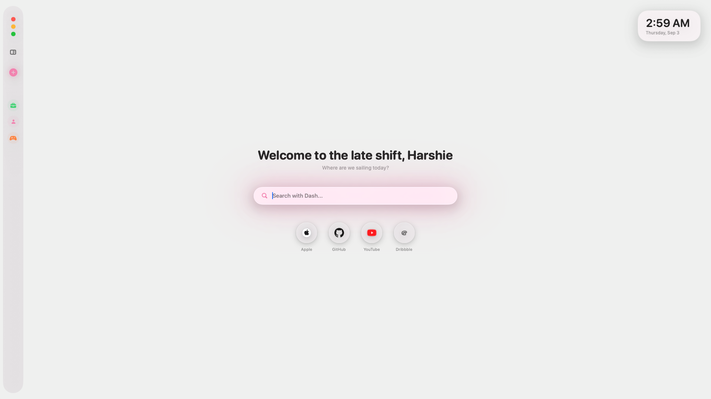

A browser that actually feels like your Mac.
Dash is a from-scratch macOS browser built with SwiftUI and WebKit, not a Chromium wrapper. Liquid Glass throughout, built-in ad blocking, and a new-tab page you can make your own.
macOS 26 (Tahoe) or later · Free & open source · MIT licensed

everything, natively
Built on Apple's own frameworks
Tabs that stay out of your way
Tab groups with custom names, icons, and colors, pinned tabs, and a Quick Switcher (⌘K) that searches open tabs and history together. A pooled WKWebView architecture keeps tabs warm, so switching feels instant even with dozens open.
A new tab that's actually yours
Custom background images, editable favorites, a time-aware greeting, and 30 built-in color themes plus a custom accent picker. It's built on macOS's Liquid Glass, so you get real vibrancy instead of a flat tint, and the interface adapts to whatever's behind it.

Ad blocking, built right in
Native content-rule-list blocking for ads and trackers, plus a dedicated YouTube ad-skip script. Tracker blocking, history, and search suggestions all toggle independently, and private windows can be locked behind Touch ID.
- Native
WKContentRuleList-based ad & tracker blocking, toggleable anytime - YouTube ad-skip script that auto-clicks skip and fast-forwards video ads
- Private windows, optionally locked behind Touch ID
- Choice of search engine: Google, Bing, DuckDuckGo, Brave Search, or Ecosia
- One-tap "Clear All Data," or wipe automatically on quit
the rest of it
Everything else you'd expect
Full browsing history
Searchable, with per-item delete and a one-tap "Clear All Data."
Download manager
A live progress shelf while files come in, plus a full downloads panel.
Bookmarks
Heart any page from the address bar, then browse and search everything you've saved in one place.
Fluid, spring-based animations
Across the sidebar, tab switching, and the address bar's morph into the floating bar as a page loads, plus subtle trackpad haptics on key actions.
Find in Page & Reopen Closed Tab
⌘F searches text on the page you're on. ⇧⌘T brings back the last tab you closed, up to twenty deep.
Updates without an App Store
Dash checks GitHub Releases in the background and drops a quiet in-app banner when a new version's ready.
Light, Dark, or System
Appearance follows the system, or pick one and stick with it.